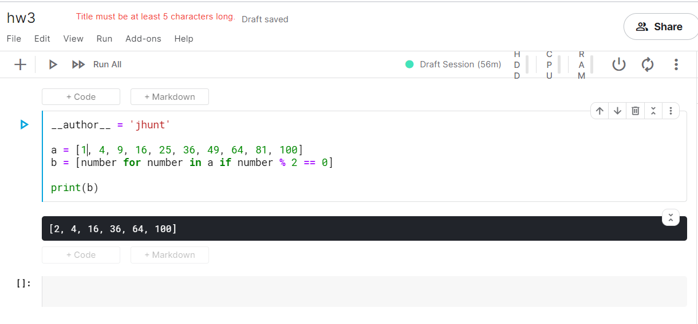

W10-14 <<
Previous Next >> W15-18
HW3
練習2
Odd Or Even (奇數或偶數)
input if types int equality comparison numbers mod
Again, the exercise comes first (with a few extras if you want the extra challenge or want to spend more time), followed by a discussion. Enjoy!
輸入類型是否等於相等比較數mod
再次，練習是第一位的（如果您想要額外的挑戰或想要花費更多的時間，可以添加一些其他內容），然後進行討論。請享用！
Exercise 2 (and Solution)
練習2（和解決方案）
Ask the user for a number. Depending on whether the number is even or odd, print out an appropriate message to the user. Hint: how does an even / odd number react differently when divided by 2?
詢問用戶一個數字。根據數字是偶數還是奇數，向用戶打印一條適當的消息。提示：偶數/奇數除以2時的反應如何？
Extras:
- If the number is a multiple of 4, print out a different message.
- Ask the user for two numbers: one number to check (call it
num) and one number to divide by (check). If check divides evenly into num, tell that to the user. If not, print a different appropriate message.
附加功能：
- 如果數字是4的倍數，請打印出另一條消息。
- 向用戶詢問兩個數字：一個數字要檢查（稱為
num），另一個數字要除以（check）。如果check平均分為num，請告知用戶。如果不是，請打印其他適當的消息。
Discussion 討論區
Concepts for this week:
- Modular arithmetic (the modulus operator)
- Conditionals (if statements)
- Checking equality
本週的概念：
- 模塊化算術（模運算符）
- 有條件的（如果語句）
- 檢查平等
Modular arithmetic (the modulus operator)
模塊化算術（模運算符）
We have been doing arithmetic (addition, subtraction, multiplication, division) since elementary school, and often it is useful for us to find not the answer to a division problem but the remainder when we do a division operation. This operation is called the “modulus operation.” For example, when I divide 5 by 3, the remainder is 2, and the sentence reads like this: “5 modulo 3 is 2.”
從小學開始，我們就一直在進行算術運算（加，減，乘，除），這對於我們尋找除法問題不是答案，而是對除法運算的其餘部分有用。該操作稱為“模運算”。例如，當我將5除以3時，餘數為2，句子的內容如下：“ 5模3為2”。
In the Python shell:
>>> 5 % 3
2
>>> 6 % 3
0
>>> 7 % 3
1
The % sign is exactly the modulus operator.
該%標誌是完全模運算符。
Conditionals 有條件的
When a computer (or a program) needs to decide something, it checks whether some condition is satisfied, which is where the term conditional comes from. Conditionals are a fancy way of saying “if statements”. If Michele was born in New York, she has an American passport. That statement is a conditional (if statement) that in this case is true. In Python this works the same way:
當計算機（或程序）需要做出決定時，它會檢查是否滿足某些條件，這就是條件一詞的來源。條件語句是說“ if語句”的一種奇特的方式。如果米歇爾（Michele）出生於紐約，則她擁有美國護照。該語句是在這種情況下為真的條件（如果語句）。在Python中，這是相同的方式：
if age > 17:
print("can see a rated R movie")
elif age < 17 and age > 12:
print("can see a rated PG-13 movie")
else:
print("can only see rated PG movies")
When the program gets to the if statement, it will check the value of the variable called age against all of the conditions, in order, and will print something to the screen accordingly. Note that elif is a portmanteau of “else” and “if”. So if the variable age holds the value 15, the statement "can see a rated PG-13 movie" will be printed to the screen.
Note how the statement elif age < 17 and age > 12 has the statement and - you can use or and not in the same way. Understanding a bit about logic and how it works, or being able to rationally think about logic will help you get the conditions right - oh, and a lot of practice.
當程序到達該if語句時，它將按age所有條件依次檢查被調用的變量的值，並將相應的內容打印到屏幕上。請注意，這elif是“ else”和“ if”的組合。因此，如果變量age的值保持為15，則該語句"can see a rated PG-13 movie"將被打印到屏幕上。
請注意該語句如何elif age < 17 and age > 12具有該語句and-您可以使用or和not以相同的方式。了解一些有關邏輯及其原理的知識，或者能夠理性地思考邏輯，將幫助您找到合適的條件-哦，還有很多練習。
Checking for equality (and comparators in general)
檢查是否相等（以及一般的比較器）
A fundamental thing you want to do with your program is check whether some number is equal to another. Say the user tells you how many questions they answered incorrectly on a practice exam, and depending on the number of correctly-answered questions, you can suggest a specific course of action. For integers, strings, floats, and many other variable types, this is done with a simple syntax: ==. To explicitly check inequality, use !=.
您要對程序執行的基本操作是檢查某個數字是否等於另一個數字。假設用戶告訴您他們在實踐考試中有多少個答錯了的問題，並且根據正確回答的問題的數量，您可以提出具體的操作建議。對於整數，字符串，浮點數和許多其他變量類型，這是通過簡單的語法完成的：==。要顯式檢查不平等，請使用!=。
if a == 3:
print("the variable has the value 3")
elif a != 3:
print("the variable does not have the value 3")
Notice how in this example, the condition is redundant. In the first condition we are checking whether the variable a has the value 3 and in the second, we are checking whether a does NOT have the value 3. However, if the first condition is not true (a is in fact not 3), then the second condition is by definition true. So a more efficient way to write the above conditional is like this:
請注意，在此示例中，條件是多餘的。在第一個條件中，我們正在檢查變量是否a具有值3，在第二個條件中，我們正在檢查變量是否a不具有值3。但是，如果第一個條件不成立（a實際上不是3），則第二個條件根據定義，條件是正確的。因此，編寫上述條件的更有效方法如下：
if a == 3:
print("the variable has the value 3")
else:
print("the variable does not have the value 3")
The same equality / inequality comparisons work for strings.
相同的相等/不相等比較適用於字符串。
num = int(input("enter a number to check: "))
check = int(input("enter a number to divide by: "))
if num % 4 == 0:
print(num, "this number is a multiple of 4")
elif num % 2 == 0:
print(num, "this is an even nummber")
else:
print(num, "its an odd number")
if check % 2 == 0:
print(num, "Can devide evenly by:", check)
else:
print(num, "Can't be devide evenly by:", check)
>y:\python38\pythonw.exe -u "HW3-2.py"
enter a number to check: 4
enter a number to divide by: 3
4 this number is a multiple of 4
4 Can't be devide evenly by: 3
練習7
__author__ = 'jhunt'
a = [1, 4, 9, 16, 25, 36, 49, 64, 81, 100]
b = [number for number in a if number % 2 == 0]
print(b)

Exercise 16
練習16
Password Generator 
密碼生成器
Write a password generator in Python. Be creative with how you generate passwords - strong passwords have a mix of lowercase letters, uppercase letters, numbers, and symbols. The passwords should be random, generating a new password every time the user asks for a new password. Include your run-time code in a main method.
用Python編寫密碼生成器。在生成密碼的方式上要有創意-強密碼包含小寫字母，大寫字母，數字和符號。密碼應該是隨機的，每次用戶要求輸入新密碼時都會生成一個新密碼。在主要方法中包括您的運行時代碼。
Extra:
- Ask the user how strong they want their password to be. For weak passwords, pick a word or two from a list.
額外：
詢問用戶他們希望密碼的強度。對於弱密碼，請從列表中選擇一兩個單詞。
Discussion
There are no new topics this week, but you will need to use Python’s random module, described in this post.
討論區
本週沒有新話題，但是您需要使用Python的random模塊，如本文所述。
Exercise 34 練習34
Birthday Json 傑森生日
This exercise is Part 2 of 4 of the birthday data exercise series. The other exercises are: Part 1, Part 3, and Part 4
In the previous exercise we created a dictionary of famous scientists’ birthdays. In this exercise, modify your program from Part 1 to load the birthday dictionary from a JSON file on disk, rather than having the dictionary defined in the program.
Bonus: Ask the user for another scientist’s name and birthday to add to the dictionary, and update the JSON file you have on disk with the scientist’s name. If you run the program multiple times and keep adding new names, your JSON file should keep getting bigger and bigger.
此練習是生日數據練習系列4的第2部分。其他練習是：第1部分，第3部分和第4部分。
在上一個練習中，我們創建了著名科學家生日字典。在本練習中，請修改第1部分中的程序，以從磁盤上的JSON文件加載生日字典，而不是在程序中定義字典。
獎勵：向用戶詢問另一個科學家的名字和生日，以添加到詞典中，並使用科學家的名字更新磁盤上的JSON文件。如果您多次運行該程序並繼續添加新名稱，則JSON文件應該越來越大。
Discussion.
In a previous exercise we talked about how to save information to a .txt file on disk, but in this exercise we are talking about writing a different kind of file format called JSON.
The JSON file format was developed in the early 2000s as a standard for how web servers would pass data back and forth. It is still used for web server communication today, and it conveniently is also a way we can store dictionary-like data in a file on disk. The JSON format specifies a way to serialize (turn into a string) a dictionary or list, which then means that string can be written to disk or passed to another application. JSON is meant to store dictionary-like data both in a readable way for humans, and in a compact way that can be read by computers. Because it is a standard format, you can write JSON in one language and read JSON from another language to effectively pass information between the two programs or applications. You can read more about the history of JSON on the wikipedia article.
在上一個練習中，我們討論瞭如何將信息保存到磁盤上的.txt文件中，但是在此練習中，我們討論的是編寫另一種稱為JSON的文件格式。
JSON文件格式是在2000年代初期開發的，它是Web服務器如何來回傳遞數據的標準。如今，它仍用於Web服務器通信，它也是我們可以將類似字典的數據存儲在磁盤上的文件中的一種便捷方式。JSON格式指定了一種對字典或列表進行序列化（轉換為字符串）的方式，這意味著可以將字符串寫入磁盤或傳遞給另一個應用程序。JSON旨在以人類可讀的方式以及計算機可以讀取的緊湊方式存儲類似字典的數據。因為它是一種標準格式，所以您可以用一種語言編寫JSON並從另一種語言讀取JSON，以在兩個程序或應用程序之間有效地傳遞信息。您可以在上閱讀有關JSON歷史的更多信息維基百科文章。
Here is an example of JSON:
這是JSON的示例：
{
"name": "Michele",
"shirt_color": "blue",
"laptops": [
{
"brand": "Lenovo",
"operating_system": "Ubuntu"
},
{
"brand": "Apple",
"operating_system": "OSX"
}
],
"has_a_dog": false,
"items_on_desk": ["mug", "pen", "monitor"]
}
Notice how you can mix dictionaries and lists. In this example the top-level container is a dictionary, with the keys name, shirt_color, laptops, has_a_dog, and items_on_desk. The keys can be lists, strings, booleans, or other dictionaries. Usually you don’t write JSON by hand (but it is very readable so you easily could). One of my favorite tools to test whether you’ve written valid JSON is this free JSON validator - just paste your JSON in there and it tells you if it will be read by a program that understands JSON.
There is a built-in Python library for reading and writing JSON files, so you don’t have to worry about how your dictionaries and lists are going to be turned into the right format!
As long as the data you want to store is either a dictionary or a list of dictionaries, writing JSON is straightforward. First, import the json library (no installation needed, it is built in to Python) and initialize some dictionary:
注意如何混合使用字典和列表。在這個例子中頂層容器是一個字典，與鍵name，shirt_color，laptops，has_a_dog，和items_on_desk。鍵可以是列表，字符串，布爾值或其他字典。通常，您不需要手工編寫JSON（但它具有很高的可讀性，因此您可以輕鬆編寫）。這個免費的JSON驗證程序是我最喜歡的測試您是否已編寫有效JSON的工具之一-只需將JSON粘貼在其中，它就會告訴您是否會由理解JSON的程序讀取它。
有一個內置的Python庫用於讀寫JSON文件，因此您不必擔心字典和列表將如何轉換為正確的格式！
只要您要存儲的數據是字典還是詞典列表，編寫JSON就很簡單。首先，導入json庫（無需安裝，它內置在Python中）並初始化一些字典：
import json
info_about_me = {
"name": "Michele",
"has_a_dog": False
}
Then, to save your dictionary to disk you need to open a file and use the json.dump() method. Remember to use the w flag when opening a file for writing:
然後，要將字典保存到磁盤，您需要打開一個文件並使用該json.dump()方法。w打開文件進行寫入時，請記住使用該標誌：
with open("info.json", "w") as f:
json.dump(info_about_me, f)
And you will have saved a file called info.json in the same directory as your Python program. The dictionary info_about_me will be saved to disk, but the variable name will not be. Basically, JSON won’t remember the name of the variable you saved your dictionary in. If you open the file with a text editor (Notepad++, vim, emacs, Sublime Text, etc.), you will just see:
您將info.json在與Python程序相同的目錄中保存一個名為的文件。詞典info_about_me將保存到磁盤，但變量名不會。基本上，JSON不會記住保存字典的變量的名稱。如果使用文本編輯器（Notepad ++，vim，emacs，Sublime Text等）打開文件，則只會看到：
{
"name": "Michele",
"has_a_dog": false
}
Alternatively, you can also manually create a JSON file and type JSON directly into it (passing it through the JSON validator of course!). Just save the file with the .json extension and copy the dictionary directly into the file.
Now I can use the information about me that I saved to disk in another program (written in a completely different file) to do something like printing a message. When I saved the JSON file, the variable name of my dictionary was not saved with it, so when I load the JSON file I need to save it into a variable. I can use the same json library to do this:
另外，您也可以手動創建JSON文件，然後直接在其中鍵入JSON文件（當然，將其通過JSON驗證器！）。只需保存帶有.json擴展名的文件，然後將字典直接複製到文件中即可。
現在，我可以使用保存在另一個程序中的有關我的信息（以完全不同的文件編寫）來執行類似打印消息的操作。當我保存JSON文件時，字典的變量名並未隨之保存，因此，當我加載JSON文件時，需要將其保存到變量中。我可以使用相同的json庫來執行此操作：
import json
with open("info.json", "r") as f:
info = json.load(f)
if info["has_a_dog"]:
print("{} has a dog".format(info["name"]))
else:
print("{} does not have a dog".format(info["name"]))
When this program runs, the output should be:
運行該程序時，輸出應為：
Michele does not have a dog
Notice how when I loaded the JSON file I used a different name than when I saved it - this is because the variable names don’t get saved together with the JSON data, so you do not have to use the same variable names to save and load JSON.
Now that you know about JSON, you can use it to do a number of things:
W10-14 <<
Previous Next >> W15-18